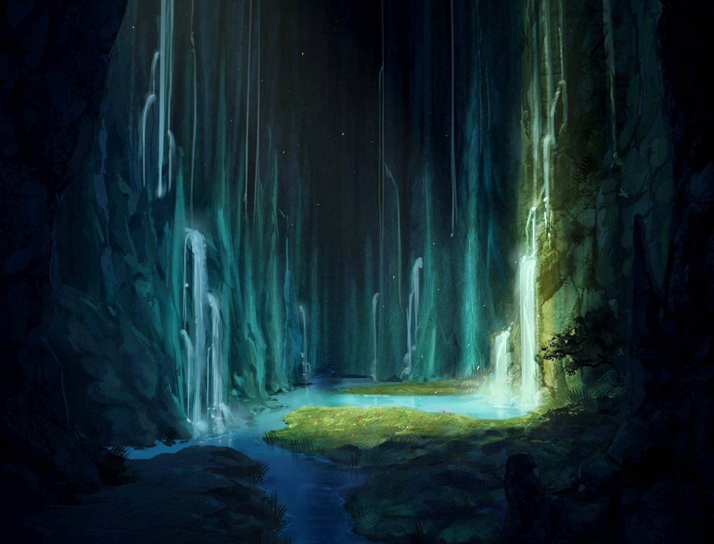

Рохан
«И почему же людей постигает неудача?»
Рохан (англ. Rohan) — Один из первых высших богов, он хранитель знаний и трудолюбия. Вдохновляет каждого, у кого есть желание создавать что-то новое и великое. Также он внеплановый отец Клэр, Габриэля, Эцио и Авилы. Главный владелец артефакта Книги Знаний.
Содержание
История
Рай
Рохан появился в раю примерно в одно время с такими богами как Марта, Талия, Нулл. Вместе со своей книгой уже вместе с другим богом Эдвардом тот воссоздал эволюцию и прогресс человечества как "новой жизни" и эпохи. За это время он уже успел запустить метеорит из которого родилась Клэр и Рохан взял её себе на воспитание. За это время столько всего случилось, создание людьми культа в его честь, эксперименты сомнительные у Эдварда и игры Клэр, для последних Рохан создал специальную коробку Пандоры, которая исполняла желание победителя. А также создание такой части Ангелов, как "Голоса".
Последний шанс и Новая жизнь.
В один из дней, книга Рохана пропала, как позже выяснится она была у Клэр и Эдварда. Те предрекли Рохану то, что на следующий день Рай падёт и ушли. Рохан не особо хотел оставлять Рай на гибель, но и допустить чтобы Эдвард и Клэр ушли вместе, учитывая их поведение и характер, который может знаменовать гибель человечества, поэтому чтобы оставить прощальный подарок, Рохан создаёт Авилу, последнего Голоса, и уже сам покидает Рай, попрощавшись как в настоящее время выясниться навсегда с Габриэлем, также заперев на всякий случай Джека в ящик и скинув в морское дно. Время шло, Рай действительно пал, Рохан начал отдалятся вместе со своей книгой от людей, увидев их настоящую жестокость лично, при этом сам же лично и получив в процессе некоторые неприятные болезненные воспоминания. Он поселился в какой-то пещере морозной АУ Epchere, погрузившись в аспекты изучения местной магической фауны.
Финальное пророчество
Жизнь шла, Рохан продолжал исследования, как однажды к нему в дом заявились Глюк в компании двух Богинь, которым понадобилась его книга. Но Рохан уже позаботился о том, чтобы книга никому из опасных существ не досталась, поэтому дав волю лишь Эцио, тот передаёт ему книгу, хотя тот не справился в итоге с защитой. Рохану ничего не остаётся, кроме как придумать план как остановить Клэр без лишних жертв, в надежде, что в ней осталось хоть что-то хорошее, в чём уже сам Рохан не уверен.
Личность и характер
Рохан довольно мудрый и иногда даже экцентрик-весёлый бог, особенно во времена Рая, он мог с энтузиазмом изучать и делиться этим с остальными. Позже после того, как Рай уничтожится, а люди покажут всю свою природу в частности из-за отравления кровью Вилли, который погиб в войне за Рай, Рохан ушёл в полную изоляцию, отделившись полностью от социума, богов и стал подходить к исследованию фауны существ, нежели помогать людям и вдохновлять их уже как 300+ лет.
Внешность
Рохан выглядит как пожилой мужчина. У него густые рыжие волосы, зачесанные назад и пышная борода. На носу у него очки в тонкой оправе. Он одет в длинную темную накидку с капюшоном, украшенной золотой вышивкой. Под накидкой черный камзол с золотыми пуговицами и белая рубашка с воротником-стойкой. На ногах темные брюки и сапоги.
Способности и Арсенал
- Книга Знаний: Единственный артефакт у Рохана. Буквально из страницы можно создать всё что угодно и кого угодно. Всё что задумано пользователем.
- Бессмертие: Даже не смотря на свой возраст и почтительную внешность, он не может быть как-либо убит. Исключение: Только Боги могут его убить.
- Магия: Он имеет неплохие знания в магии, но в бою она невероятно бесполезна и слаба.
Связи с персонажами
Боги и приближённые
- Марта: «Если честно, я никогда не думал, что увижу тебя снова. Пусть даже в чей-то душе.»
- Талия: «Я больше всего беспокоюсь за твою решимость. Как бы это не стало проблемой, Талия. В моём плане нужно минимум насилия и больше собранности.»
- СД: «Надеюсь у него хорошо идёт отдых.»
- Оливия: «Человек с большим великим даром, ставшая кем-то большим.»
- Ремор: «Я никогда лично не видовал, чтобы человек стал Божеством.»
- Агата: «Ты меня очень разочаровала Агата. Ты могла бы обратиться к кому-то из Богов за тем, что тебя беспокоило, а не начинать этот ужас.»
- Клэр: «Это неприятно, когда тебя готово убить собственное творение божественное. Вот почему я стал предпочитать разумным и вольным существам существ куда с меньшей волей и не таким желание убить.»
- Айрис: «Я помню как заточил тебя Джек. Я не думал, что всё так обернётся и ты оставишь от себя лишь частицы.»
- Эдвард: «Наверное твои Факторы и Игры единственное что нас сводило вместе как друзей.»
- Габриэль Винс: «Я был рад повидаться с тобой после долгой разлуки. В конце-концов прошло куда больше времени, чем я обещал.»
- Эцио: «Ты не сберёг мою книгу и подверг нас этим опасности. Ты же сказал, что было место, куда её можно было спрятать. Как она оказалась тогда у Клэр?»
- Ави: «Ты единственная отличаешься от остальных Голосов. Ты райская пташка и ты сможешь закончить это всё.»
- Вилли: «Твоя кровь сделала Факторов сильнее. Даже если это не заметил Эдвард, но ты отравил Землю.»
Человечество
- Джеррими Райс (Red X): «Хороший всё таки человек.»
- Чанзи Райс: «Эцио рассказывал мне, как он и Авила ходили на твои выступления...»
- Дженнифер Райс: «Сосуд для богини, всё что я смог нормального застать о тебе.»
- Коул Райс: «Ты был тогда неожиданным гостем. Надеюсь тебе понравилось. Хотя я не очень жалую гостей.»
- Фиалка Грейро Морн: «Ты не можешь быть божеством. Кем бы не были твои родители.»
- Глюк Райдер: «Двойной сосуд... Полностью из любопытства, можешь ли ты вместить больше? Какой твой предел?»
Демоны
- Эмилия Стоун: «Должен сказать, тогда наша встреча показалась мне неожиданной, чтобы Демон был в мире людей и не Фактор при этом.»
Интересные факты
- Старость: Рохан раньше был светло-рыжим, сейчас же он почти седой и единственный из Богов, кто подвергся изменениям времени, вторая Клэр с её взрослением.
- Музыкальный вкус: Самые любимые музыкальные жанры Рохана это джаз и блюз. У него также есть дома несколько пластинок и виниловый проигрыватель.
- Не способный боец: Рохан слаб и также боится вступать в сражения, особенно с богами.
- Писатель: Рохан очень много пишет разных книг с наблюдениями и исследованиями, которые по манере содержания походят на Эдварда. А также несколько безуспешных попыток написать свои песни и роман.
- Одиночество и безумие: Рохан за столько врем ПОЛНОЙ изоляции в глубоком каньоне в пещерном домике можно сказать немного разучился социуму и также бывает несёт бред.
- Незванные гости: Из РП единственные кто из настоящего времени встречали и общались с Роханом были: Джерри, Чанзи, Фиалка, Коул, Эмилия. А потом уже Глюк и Марта с Талией.
- Табу и вето на Книгу Знаний: Раньше Рохан сильно был зависим от этой книги, но после Эцио, он наложил полный запрет на её использование для всех, кроме своих последователей (душой, а не выбором), а также Голосов. Ни Боги, ни Рохан, ни Демоны, ни люди и тому подобное не смогут ею пользоваться.
Галерея
